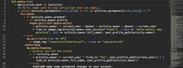
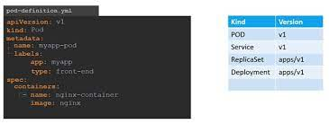
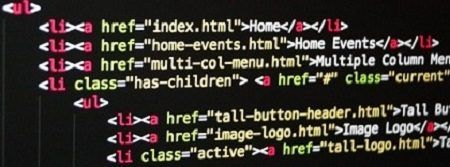
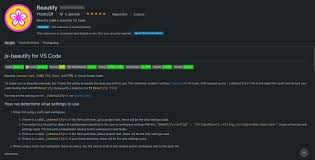
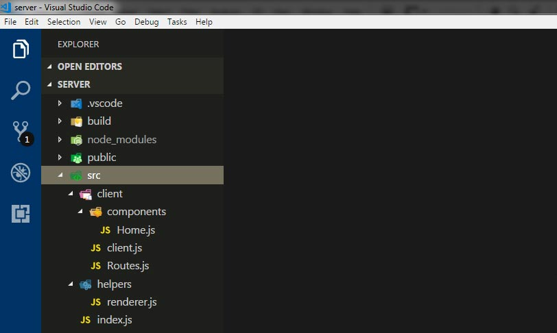

Visual Studio Code: Sus funcionalidades y extensiones
En el mundo de los editores de texto y de código fuente existe un amplio catálogo de opciones: Text, Atom, Notepad, Brackets y Visual Studio Code. Este último será del que tratemos en este artículo.
Visual Studio Code
Visual Studio Code es un editor de código fuente que permite trabajar con diversos lenguajes de programación, admite gestionar tus propios atajos de teclado y refactorizar el código. Es gratuito, de código abierto y nos proporciona una utilidad para descargar y gestionar extensiones con las que podemos personalizar y potenciar esta herramienta.
Las extensiones de Visual Studio Code nos otorgan infinidad de opciones, como colorear tabulaciones, etiquetas o recomendaciones de autocompletado. También hay extensiones que nos ayudan con el lenguaje de programación que vayamos a usar, como por ejemplo para Python, C / C++, JavaScript, etc.
A continuación, se detallan algunas extensiones interesantes para el desarrollo web en Visaual Studio Code:
* Better Haml:
Extensión que nos ayuda con la sintaxis y autocompletado de Haml.

* YML (Yseop Markup Language):
Provee soporte para YML, dando color y atajos.

* HTML Snippets:
Añade colores a las etiquetas HTML y atajos para este lenguaje.

* Beautify:
Un código más atractivo y facilita su lectura.

Extensiones recomendadas de Visual Studio Code:
Dos extensiones que a mi, personalmente, me facilitan mucho la lectura del código y la navegación por los menús.
*Visual Studio Code-icons:
Extensión que cambia y añade iconos para conseguir una navegación mas sencilla e intuitiva. Con ella podrás identificar de un simple vistazo si es un fichero de HTML, un directorio, un fichero de Ruby o de JavaScript.

Indent-Rainbow:
Extensión que permite que, si tenemos un código amplio con funciones y anidaciones, podamos identificar rápidamente qué esta dentro de que.
Las extensiones que nos ayudan con los lenguajes de programación son muy interesantes. En mi caso trabajo con las siguientes:
Ruby:
Es una extensión muy completa, ayuda a desarrollar Ruby con Visual Studio Code, proporciona atajos, recomendaciones de texto y, aparte, nos proporciona herramientas del propio Ruby como Rubocop. Es una herramienta que analiza y formatea el código. O Reek que es una herramienta que examina las clases, módulos y métodos de Ruby y reporta cuando el ‘código huele mal’.